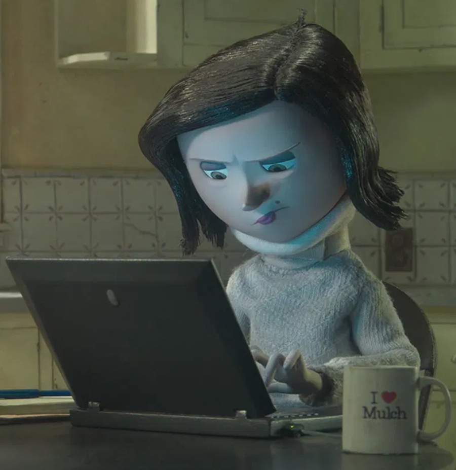
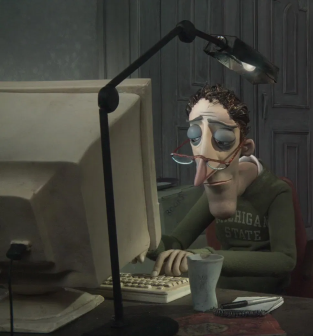
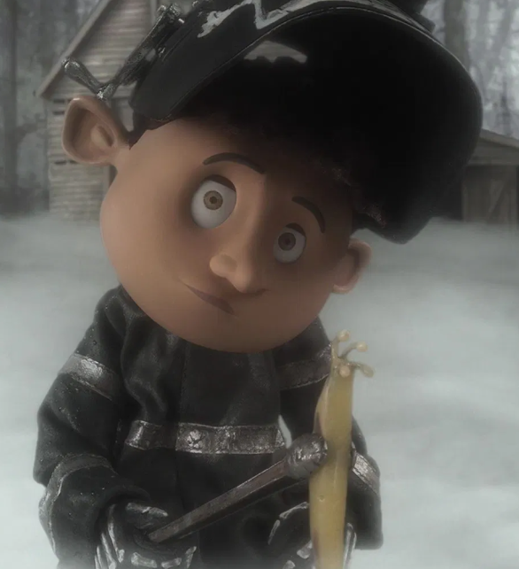
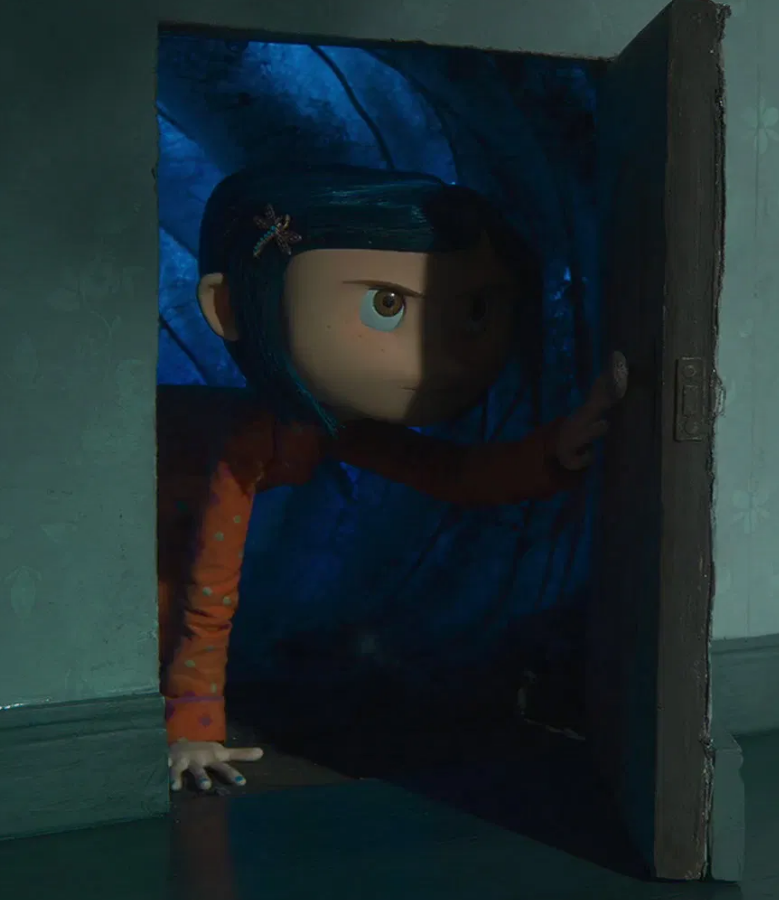
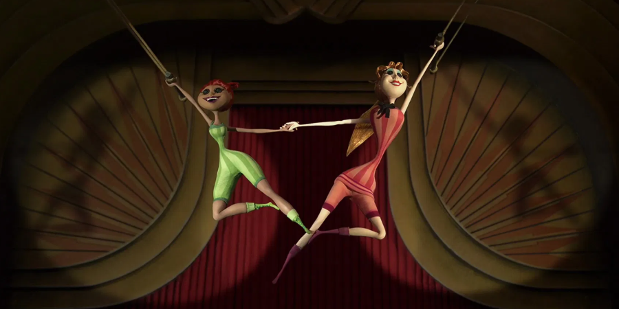

Actividades

Pink Palace es el lugar de trabajo del Señor y la Señora Jones, ellos están todo el día escribiendo en sus computadores.
 Las señoras Spink y Forcible tiene una gran cantidad de objetos mágicos en su peprturbador sótano, donde lee la suerte de Coraline y le advierten de un gran peligro.
Coraline y Wybie siempre está explorando, Coraline en su aventura conoce a todos los personajes y además descubre un mundo mágico, llamado el Otro Mundo. Donde todo está a su gusto, sus padres la consienten y dan toda la atención que ella desea. El Otro Papá le hace un jardín con su cara y la Otra Mamá le hace unos platillos deliciosos. Por otro lado Wybie se dedica a buscar cosas desagradables.
 En el mundo real es cuestionable la existencia del circo de ratones del Señor Bobinski pero en el Otro Mundo, el Otro Señor Bobinski hace un espectaculo esplendido, con muchos ratones coordinados y efectos especiales que sorprenden a Coraline y al Otro Wybie.
Las señoras Spink y Forcible del Otro Mundo ofrecen a Coraline un show de baile, danza y acrobacia, donde muestran su increible destreza y forma física. El show tiene como público a todos los perro que han tenido en el mundo real.
